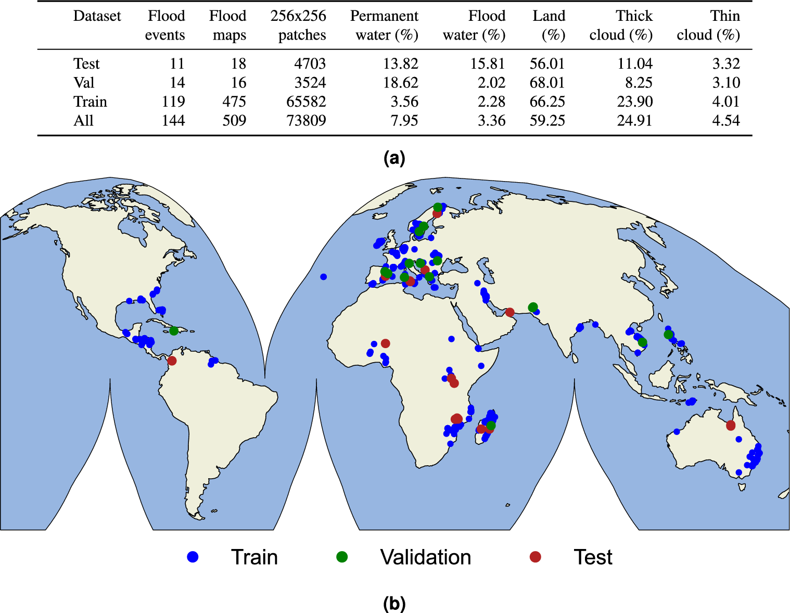

The WorldFloods database#
The WorldFloods database contains 509 pairs of Sentinel-2 images and flood segmentation masks. It requires approximately 300GB of hard-disk storage.
The WorldFloods database and all pre-trained models are released under a Creative Commons non-commercial licence

There are two versions of the database available:
The latest version (v2) was released with the article Global flood extent segmentation in optical satellite images. It contains flood events from 2016 and 2023. It is mainly based on Copernicus EMS flood maps which have been manually curated. In addition the ground truth binary masks are divided in two channels one with clear/cloudy pixels and another one with land/water.
The first version of the dataset was released with the article Towards global flood mapping onboard low cost satellites with machine learning. It contains flood events from 2016 to 2019. This dataset was created semi-automatically and only the validation and test events where manually curated.
Download the v2 data from Hugging-Face 🤗#
The WorldFloods v2 dataset is stored in Hugging-Face in the repository: isp-uv-es/WorldFloodsv2.
To download the full dataset (~76GB) run:
huggingface-cli download --cache-dir /path/to/cachedir --local-dir /path/to/localdir/WorldFloodsv2 --repo-type dataset isp-uv-es/WorldFloodsv2
To download single files see the Hugging Face docs.
Download the v2 data from Zenodo#
In zenodo we store the manually curated flood maps and metadata together with the flood extent map of the Pakistan 2023 flood event. 10.5281/zenodo.8153514.
Download the v1 data from the Google Drive#
A subset of the data and the pretrained models are available in this public Google Drive folder.
If you want to use this data from the Google Colab you can ‘add a shortcut to your Google Drive’ from the public Google Drive folder and mount that directory:

from google.colab import drive
drive.mount('/content/drive')
!ls '/content/drive/My Drive/Public WorldFloods Dataset'
Alternatively you can download it manually from that folder or even automatically with the gdown package.
gdown --id 11O6aKZk4R6DERIx32o4mMTJ5dtzRRKgV
Download the v1 data from the Google Bucket#
The database is available in this Google bucket: gs://ml4cc_data_lake/2_PROD/2_Mart/worldfloods_v1_0/. This Google bucket is in requester pays mode, hence you’d need a GCP project to download the data. To download the entire dataset run:
gsutil -u your-project cp gs://ml4cc_data_lake/2_PROD/2_Mart/worldfloods_v1_0/worldfloods_v1_0.zip .
If you want only an specific subset (train, train_sample, val or test) run:
gsutil -u your-project cp gs://ml4cc_data_lake/2_PROD/2_Mart/worldfloods_v1_0/train_v1_0.zip .
gsutil -u your-project cp gs://ml4cc_data_lake/2_PROD/2_Mart/worldfloods_v1_0/train_sample_v1_0.zip .
gsutil -u your-project cp gs://ml4cc_data_lake/2_PROD/2_Mart/worldfloods_v1_0/val_v1_0.zip .
gsutil -u your-project cp gs://ml4cc_data_lake/2_PROD/2_Mart/worldfloods_v1_0/test_v1_0.zip .
If you want to download the pre-trained models of this paper Towards global flood mapping onboard low cost satellites with machine learning run:
mkdir WFV1_scnn20
gsutil -u your-project cp gs://ml4cc_data_lake/2_PROD/2_Mart/2_MLModelMart/WFV1_scnn20/config.json WFV1_scnn20/
gsutil -u your-project cp gs://ml4cc_data_lake/2_PROD/2_Mart/2_MLModelMart/WFV1_scnn20/model.pt WFV1_scnn20/
mkdir WFV1_unet
gsutil -u your-project cp gs://ml4cc_data_lake/2_PROD/2_Mart/2_MLModelMart/WFV1_unet/config.json WFV1_unet/
gsutil -u your-project cp gs://ml4cc_data_lake/2_PROD/2_Mart/2_MLModelMart/WFV1_unet/model.pt WFV1_unet/
If you find this work useful please cite:
@article{portales-julia_global_2023,
title = {Global flood extent segmentation in optical satellite images},
volume = {13},
issn = {2045-2322},
doi = {10.1038/s41598-023-47595-7},
number = {1},
urldate = {2023-11-30},
journal = {Scientific Reports},
author = {Portalés-Julià, Enrique and Mateo-García, Gonzalo and Purcell, Cormac and Gómez-Chova, Luis},
month = nov,
year = {2023},
pages = {20316},
}
@article{mateo-garcia_towards_2021,
title = {Towards global flood mapping onboard low cost satellites with machine learning},
volume = {11},
issn = {2045-2322},
doi = {10.1038/s41598-021-86650-z},
number = {1},
urldate = {2021-04-01},
journal = {Scientific Reports},
author = {Mateo-Garcia, Gonzalo and Veitch-Michaelis, Joshua and Smith, Lewis and Oprea, Silviu Vlad and Schumann, Guy and Gal, Yarin and Baydin, Atılım Güneş and Backes, Dietmar},
month = mar,
year = {2021},
pages = {7249},
}